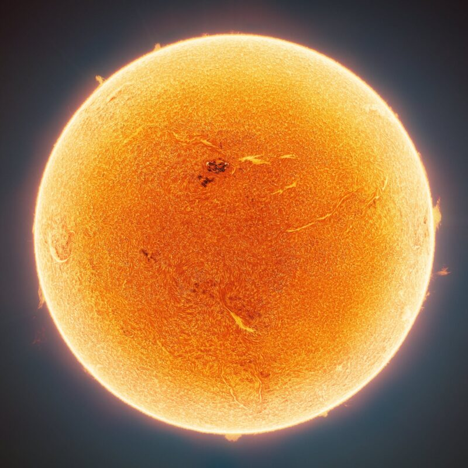
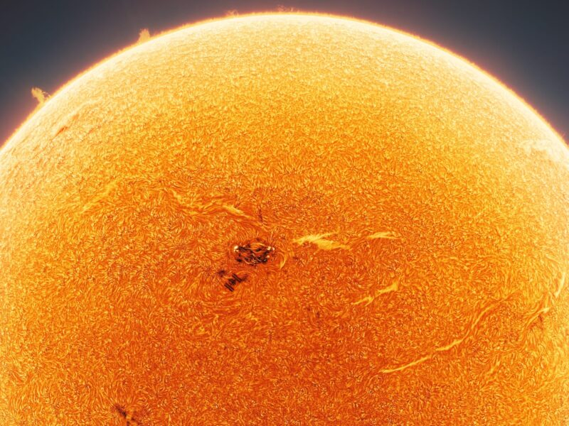

ဒီ ပုံမှာ အပြည်ပြည်ဆိုင်ရာ အကာသ စခန်း (International Space Station) ဟာ နေက နေပြောက် (sun spot) တွေနဲ့ ရောပြီး ပျောက်ကွယ်နေတာကို တွေ့ကြရမှာပါ။ ဒါပေမယ့် သေသေချာချာ ရှာကြည့်ရင်တော့ တွေ့ကြရမှာ ဖြစ်ပါတယ်။
အပြည်ပြည် ဆိုင်ရာ အာကာသ စခန်းဟာ ကမ္ဘာကို တစ်နေ့ ၁၆ ကြိမ် ပတ်ပါတယ်။ ညဖက် အချိန်မှာ ဆိုရင် ကျွန်တော်တို့ ခေါင်းပေါ်က ISS ဖြတ်သွားတာကို မှန်ဘီလူး မပါပဲ သာမန် မျက်လုံးနဲ့ မြင်နိုင်ပါတယ်။
(NASA ရဲ့ APP မှာ ISS ကို track လုပ်လို့ ရပါတယ်။ ဘယ်နေရာ ရောက်နေပြီ ဆိုတာကို ပြသလို ISS ကိုယ့်ခေါင်းပေါ်က ဖြတ်မယ်ဆိုရင်လဲ ၁၅ မိနစ် ကြိုပြီး သတိပေးပါတယ်။)
ဒီပုံကို ရဖို့ဆိုတာ တကယ်က မလွယ်ပါဘူး။ ISS ရဲ့ အလျင်က မြန်တာမို့ နေရှေ့က ဖြတ်တဲ့ အချိန်ဟာ စက္ကန့်ပိုင်း လောက်ပဲ ကြာပါတယ်။ ဒီလို ဖြတ်တဲ့ အချိန်ကို အမိအရ ရိုက်ယူ ထားတာ ဖြစ်ပါတယ်။
ဒီပုံမှာ ISS ကို တွေ့ကြသလားဗျာ။ (Hint: ISS က နေပြောက် တစ်ခုရဲ့ အနီးမှာ ပုန်းနေပါတယ်။ နေပြောက်တွေဟာ နေရဲ့ မျက်နှာပြင်မှာ အပူချိန် လျော့နည်းတဲ့ ဒေသတွေ ဖြစ်ပြီး ပတ်ဝန်းကျင် ထက် ပိုပြီး မှောင်နေပါတယ်။)

